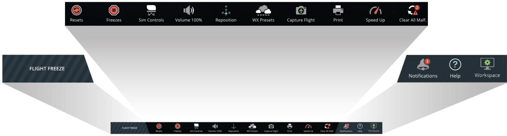
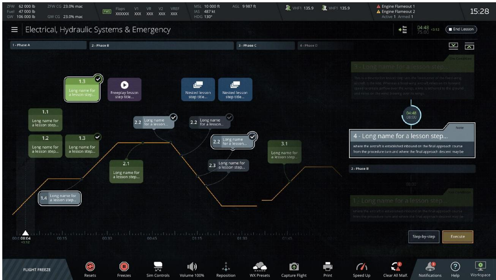
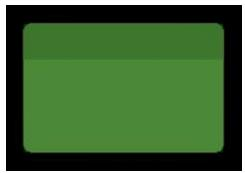
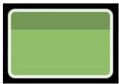
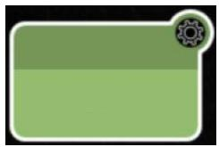
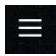
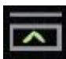

1.5 课程计划配置工作区（Lesson Plan Profile Workspace）
对应原始手册：## 14. Lesson Plan Profile Workspace | 对应 A320.md：## 2.5 课程计划配置工作区
一、功能层级与界面总览
工作区入口说明：Lesson Plan Profile Workspace（课程计划配置工作区）是 IOS 的一个独立工作区，并非弹窗。教员需通过控制面板底部页脚（1.2.7）最右侧的 Workspace 按钮打开工作区切换菜单，选择「Lesson Plan Profile」进入本界面。因此图 1 界面底部显示的控制栏与 1.2.7 完全一致——所有 IOS 工作区均共享同一套底部控制栏。
课程计划配置工作区以图形化方式展示所选课程中包含的所有训练元素。训练阶段及其关联步骤等训练元素，以覆盖在飞行剖面（琥珀色线）之上的形式呈现，该飞行剖面由基于 Web 的 CAE Slick 课程计划编辑器定义。
与 1.2.1 LESSON PLAN Tab 的关系：本工作区与1.2.1 控制面板中的 LESSON PLAN 选项卡共享同一套课程数据源，但定位不同：LESSON PLAN Tab 以两个可滚动区域分别展示训练阶段和步骤，是教员加载、控制与执行课程的操作入口；而本工作区提供了图形化飞行剖面视图（画布 + 琥珀色剖面线），用于在更大视野下鸟瞰课程全局、监控执行进度与时间线。两者分别对应"态势图"与"操作台"两种定位。
课程计划配置工作区使教员能够快速浏览课程计划中包含的大部分（甚至全部）训练元素，当然具体可见数量取决于课程的规模大小。
课程计划配置工作区包含以下组成部分：
- 地图标题栏（Map Header）：与地图工作区标题栏完全相同，显示重量与平衡、性能数据、高度/航向/IAS、通信、故障、当前时间、课程信息等；
- 主区域（Main Section）：分为两种视图模式——画布视图（Canvas）与列表视图（List），并包含时间区域、时间线和按钮区；
- 地图页脚（Map Footer）：与控制面板底部（1.2.7）完全相同，包含工作区切换、冻结/重置、模拟控制、音量等快捷按钮。
1.1 功能层级结构
graph TD
subgraph Main["Lesson Plan Profile Workspace / 课程计划配置工作区"]
A[Map Header
地图标题栏] B[Main Section
主区域] C[Map Footer
地图页脚] end B --> B1[Canvas View Mode
画布视图模式] B --> B2[List View Mode
列表视图模式] B --> B3[Time Section
时间区域] B --> B4[Time Line
时间线] B --> B5[Buttons
按钮区] B1 --> B1a[Training Phases
训练阶段] B1 --> B1b[Lesson Steps
课程步骤] B1 --> B1c[Runtime Statuses
运行时状态] B5 --> B5a[Lesson List
教案列表] B5 --> B5b[List View Show/Hide
列表视图显隐] B5 --> B5c[List View Expand/Collapse
列表视图展开折叠] B5 --> B5d[End Lesson
结束课程] B5 --> B5e[Step-by-Step
逐步执行] B5 --> B5f[Execute
执行] style Main fill:#dbeafe,stroke:#2563eb,stroke-width:2px
地图标题栏] B[Main Section
主区域] C[Map Footer
地图页脚] end B --> B1[Canvas View Mode
画布视图模式] B --> B2[List View Mode
列表视图模式] B --> B3[Time Section
时间区域] B --> B4[Time Line
时间线] B --> B5[Buttons
按钮区] B1 --> B1a[Training Phases
训练阶段] B1 --> B1b[Lesson Steps
课程步骤] B1 --> B1c[Runtime Statuses
运行时状态] B5 --> B5a[Lesson List
教案列表] B5 --> B5b[List View Show/Hide
列表视图显隐] B5 --> B5c[List View Expand/Collapse
列表视图展开折叠] B5 --> B5d[End Lesson
结束课程] B5 --> B5e[Step-by-Step
逐步执行] B5 --> B5f[Execute
执行] style Main fill:#dbeafe,stroke:#2563eb,stroke-width:2px
1.2 界面结构
| 区域/控件 | 位置 | 功能说明 |
|---|---|---|
| 地图标题栏 Map Header | 工作区顶部 | 与地图工作区标题栏相同，显示一系列与航空器相关的信息页签，包括：重量与平衡（Weight and Balance）、性能数据（Performance Data）、高度/航向/IAS（Altitude Heading IAS）、通信（Communications）、故障（Malfunctions）、当前时间（Current Time）、课程与练习信息（Lesson and exercise information）（参考 1.6 地图工作区标题栏，内容一致） |
| 主区域 Main Section | 工作区中部核心区域 | 包含画布视图、列表视图、时间区域、时间线、按钮区 |
| 地图页脚 Map Footer | 工作区底部 | 与控制面板页脚相同，包含工作区切换、冻结/重置、模拟控制、音量等快捷按钮（参考 1.2.7 控制面板底部，内容一致） |

图 1：控制面板底部总览（Control Board Footer）

图 2：工作区卷展菜单（Workspace Roll Up Menu）

图 3：课程计划配置工作区总览（Figure 110）
二、核心功能详解（以下介绍主区域 Main Section 各功能模块）
2.1 画布视图模式（Canvas View Mode）
| 属性 | 说明 |
|---|---|
| 功能定义 | 以图形化方式显示课程计划中所有训练阶段及关联步骤，覆盖在由 CAE Slick 课程计划编辑器定义的飞行剖面（琥珀色线）上 |
| 呈现方式 | 横向可滚动视图，支持左右滑动浏览全部课程元素；课程规模决定单屏可见元素数量 |
| 交互方式 | 点击步骤一次 → 高亮步骤项并显示勾选标记，同时展开列表视图显示步骤详情；再次点击同一步骤 → 执行该步骤 |
| 边界行为 | 自由练习（Freeplay）和嵌套课程（Nested Lesson）步骤无步骤序列号，可在课程任意时间点触发 |
| 与其他功能关系 | 与 LESSON PLAN Tab 显示相同的课程元素，仅呈现方式不同；与控制面板中的课程计划选项卡互为补充视图 |
2.2 教案元素（Lesson Elements）
课程计划中的 NOTE、SIM Condition 和 Malfunction 元素具有以下特征：
| 属性 | 说明 |
|---|---|
| 步骤序列号 | 每个元素均具有步骤序列号，指示其所属的训练阶段 |
| 颜色编码 | 各元素采用颜色编码，画布视图中显示的颜色与控制面板 LESSON PLAN 选项卡中一致 |
| 元素类型 | NOTE 注释步骤 / SIM 模拟条件 / MALF 故障 |
| 特殊元素 | Freeplay 自由练习与 Nested Lesson 嵌套课程步骤无序列号，可随时触发 |
2.3 运行时状态（Runtime Statuses）
画布视图中每个步骤项具有四种运行时状态，以不同图标直观呈现当前执行进度：

图 4：步骤未选择

图 5：步骤已选择

图 6：步骤正在执行指令
图 7：步骤已完成
| 状态 | 图标含义 | 触发条件 |
|---|---|---|
| 未选择 | 默认空心/灰色状态 | 步骤尚未被教员点击选中 |
| 已选择 | 高亮并显示勾选标记 | 教员点击步骤一次，等待执行确认 |
| 执行中 | 动态执行指示 | 步骤指令正在下发至模拟器 |
| 已完成 | 完成标记 | 步骤指令执行完毕，模拟器反馈完成 |
2.4 时间线（Time Line）
| 属性 | 说明 |
|---|---|
| 功能定义 | 提供课程计划总时间的可视化指示 |
| 呈现方式 | 横向时间轴，直观展示课程各阶段在时间维度上的分布 |
| 与其他功能关系 | 与时间区域配合使用，时间区域显示具体数值，时间线提供图形化概览 |
2.5 列表视图模式（List View Mode）
| 属性 | 说明 |
|---|---|
| 功能定义 | 可垂直滚动的区域，显示与画布视图相同的课程元素 |
| 呈现方式 | 纵向列表，每个步骤按训练阶段分组排列 |
| 交互方式 | 操作方式与控制面板中的 LESSON PLAN 选项卡完全相同 |
| 显隐控制 | 可通过列表视图显隐按钮切换显示/隐藏（详见本页 2.7.2 节） |
| 信息层级 | 可通过展开/折叠按钮调整每个步骤显示的信息详细程度（详见本页 2.7.3 节） |
2.6 时间区域（Time Section）
| 属性 | 说明 |
|---|---|
| 功能定义 | 显示课程计划的预估总时间和已用时间，并提供执行进度偏差指示 |
| 呈现方式 | 数值显示区，包含总预估时间、已用时间、偏差指示 |
| 偏差指示 | + 表示执行进度提前于计划时间；- 表示执行进度落后于计划时间 |
| 边界行为 | 偏差指示为实时计算，随课程执行动态更新 |
2.7 按钮区（Buttons）
主区域底部包含六个功能按钮，用于课程的选择、显示控制和执行操作。
2.7.1 教案列表（Lesson List）
| 属性 | 说明 |
|---|---|
| 功能定义 | 显示所有可用课程计划的列表入口 |
| 交互方式 | 点击图标展开课程列表，供教员选择并加载目标课程 |
| 边界行为 | 加载新课程将替换当前画布和列表视图中的全部内容 |

图 8：教案列表图标
2.7.2 列表视图模式显示/隐藏（List View Mode Show/Hide）
| 属性 | 说明 |
|---|---|
| 功能定义 | 切换列表视图模式在主区域中的显示与隐藏 |
| 交互方式 | 点击切换图标：当前为「隐藏」图标时点击隐藏列表视图；当前为「显示」图标时点击显示列表视图 |
| 呈现方式 | 两种图标互斥显示，仅展示当前可操作状态的图标 |
| 与其他功能关系 | 与 2.7.3 展开/折叠独立控制：隐藏列表视图后，展开/折叠状态仍然保留 |
图 9：点击隐藏列表视图
图 10：点击显示列表视图
2.7.3 列表视图模式展开/折叠（List View Mode Expand/Collapse）
| 属性 | 说明 |
|---|---|
| 功能定义 | 控制列表视图中每个步骤显示的信息详细程度 |
| 交互方式 | 点击展开按钮增加信息层级；点击折叠按钮减少信息层级 |
| 边界行为 | 两个按钮为独立操作，非互斥状态；展开/折叠仅影响列表视图的显示密度，不影响画布视图 |
图 11：展开列表视图（增加信息详细程度）

图 12：折叠列表视图（减少信息详细程度）
2.7.4 结束课程（End Lesson）
| 属性 | 说明 |
|---|---|
| 功能定义 | 结束当前正在运行的课程，并返回课程计划选择界面 |
| 呈现方式 | 仅在课程处于运行状态时显示；课程未运行时该按钮隐藏 |
| 交互方式 | 点击后立即结束课程，返回课程选择界面 |
| 边界行为 | 结束课程将清除当前画布和列表视图中的运行时状态 |
2.7.5 逐步执行（Step-by-Step）
| 属性 | 说明 |
|---|---|
| 功能定义 | 按逐步方式运行课程步骤，每个步骤执行前需教员确认 |
| 交互方式 | 点击激活逐步执行模式后，每执行一个步骤前需点击「执行」按钮确认 |
| 边界行为 | 与自动运行（Autorun）模式互斥；激活逐步执行后，画布视图中点击步骤的「一次选择、再次执行」逻辑仍然有效 |
2.7.6 执行（Execute）
| 属性 | 说明 |
|---|---|
| 功能定义 | 执行当前已选中的课程步骤 |
| 交互方式 | 点击后触发已选步骤的指令下发；在逐步执行模式下，作为每个步骤的确认触发器 |
| 边界行为 | 未选中任何步骤时点击无效或保持禁用态；执行后步骤状态从「已选择」流转至「执行中」 |
三、全局操作流程与推导
3.1 课程计划配置工作区教员核心操作流程全景图
flowchart LR
Start([进入 Lesson Plan Profile Workspace])
--> A{选择操作类型}
A -->|浏览课程| B1[加载课程]
A -->|查看详情| B2[点击步骤]
A -->|执行课程| B3[选择执行模式]
B1 --> C1[点击 Lesson List]
C1 --> C1a[浏览可用课程]
C1a --> C1b[选择目标课程]
C1b --> C1c[画布与列表刷新]
C1c --> End1([浏览就绪])
B2 --> C2[Canvas 点击一次]
C2 --> C2a[高亮步骤]
C2a --> C2b[显示勾选标记]
C2b --> C2c[列表视图展开详情]
C2c --> C2d{再次点击?}
C2d -->|是| C2e[直接执行步骤]
C2d -->|否| C2f[保持选中等待执行]
C2e --> End2([步骤执行完成])
C2f --> End2
B3 --> C3{执行模式}
C3 -->|Autorun| C3a[自动顺序执行]
C3 -->|Step-by-Step| C3b[逐步骤确认执行]
C3b --> C3c[选中步骤]
C3c --> C3d[点击 Execute]
C3d --> C3e[执行当前步骤]
C3e --> C3f{课程完成?}
C3f -->|否| C3c
C3f -->|是| C3g[结束课程]
C3a --> C3f
C3g --> End3([训练完成])
C2e -.->|状态流转| C2e_a[未选择 到 已选择 到 执行中 到 已完成]
C3e -.->|状态流转| C3e_a[未选择 到 已选择 到 执行中 到 已完成]
style Start fill:#dbeafe,stroke:#2563eb,stroke-width:2px
style End1 fill:#d1fae5,stroke:#059669,stroke-width:2px
style End2 fill:#d1fae5,stroke:#059669,stroke-width:2px
style End3 fill:#d1fae5,stroke:#059669,stroke-width:2px
style C3f fill:#fef3c7,stroke:#d97706,stroke-width:2px
3.2 课程执行通用状态机
stateDiagram-v2
[*] --> 空闲状态 : 进入工作区
空闲状态 --> 课程已加载 : 选择课程
课程已加载 --> 步骤已选中 : 点击步骤
步骤已选中 --> 执行中 : 点击执行或再次点击
执行中 --> 已完成 : 模拟器反馈完成
已完成 --> 步骤已选中 : 选中下一步骤
已完成 --> 课程结束 : 全部步骤完成或点击结束课程
课程结束 --> [*]
步骤已选中 --> 空闲状态 : 取消选择/切换课程
执行中 --> 空闲状态 : 点击结束课程
空闲状态 --> 课程已加载 : 加载新课程
课程已加载 --> 空闲状态 : 结束当前课程
| 状态 | 说明 | 进入条件 |
|---|---|---|
| 空闲状态 | 工作区已打开，未加载课程或课程已结束 | 进入工作区或结束课程后 |
| 课程已加载 | 课程元素已渲染在画布和列表视图中 | 从 Lesson List 选择课程后 |
| 步骤已选中 | 某个步骤处于高亮/勾选状态，等待执行 | 点击画布或列表中的步骤一次 |
| 执行中 | 步骤指令正在下发至模拟器 | 再次点击步骤或点击 Execute |
| 已完成 | 步骤指令执行完毕 | 模拟器返回执行完成信号 |
| 课程结束 | 全部步骤执行完毕或教员主动结束 | 全部步骤完成 / 点击 End Lesson |
3.3 关联依赖与异常边界
3.3.1 关联依赖表格
| 功能模块 | 依赖对象 | 依赖关系说明 |
|---|---|---|
| 画布视图 | LESSON PLAN Tab | 两者显示相同的课程元素数据源，互为补充视图；一方更新课程进度后另一方实时同步 |
| 列表视图 | LESSON PLAN Tab | 列表视图的操作逻辑与控制面板 LESSON PLAN 选项卡完全相同 |
| 执行按钮 | 步骤选中状态 | 未选中步骤时 Execute 按钮无效/禁用 |
| 结束课程按钮 | 课程运行状态 | 仅在课程处于运行状态时可见；课程未运行时不渲染 |
| 地图标题栏 | 地图工作区 | 复用地图工作区的标题栏组件，显示内容完全一致 |
| 地图页脚 | 控制面板页脚 | 复用控制面板底部组件，功能完全一致 |
3.3.2 异常边界表格
| 异常场景 | 触发条件 | 系统行为 |
|---|---|---|
| 未选中步骤即点击执行 | 教员在未点击任何步骤的情况下点击 Execute | 按钮无响应或保持禁用态，不触发任何指令下发 |
| 课程运行中切换课程 | 当前课程执行中，教员从 Lesson List 选择新课程 | 结束当前课程并加载新课程，画布和列表视图全部刷新 |
| 画布滚动超出边界 | 左右滚动至课程最左/最右端后继续滑动 | 到达边界后停止滚动，无回弹或循环 |
| 自由练习/嵌套步骤触发时机 | 在课程任意时间点触发 Freeplay/Nested Lesson | 系统允许随时触发，不校验当前阶段是否匹配 |
3.4 数据流与开发流程推导
3.4.1 数据流
教员操作（点击步骤/执行/结束）
│
▼
UI 事件层 ──→ 步骤选中事件 / 执行触发事件 / 课程结束事件
│
▼
状态管理层 ──→ 更新步骤状态（未选择→已选择→执行中→已完成）
│ 更新课程全局状态（运行中/已结束）
│
▼
模拟器指令层 ──→ 下发步骤指令至模拟器核心
│ 同步课程进度至 LESSON PLAN Tab
│
▼
反馈呈现层 ──→ 画布视图状态图标更新
列表视图详情更新
时间区域已用时间/偏差刷新
运行时状态图标切换3.4.2 API 接口契约建议
| 接口 | 方法 | 请求字段 | 响应字段 | 错误码 |
|---|---|---|---|---|
| /lesson-plan/load | POST | lessonId | lessonData, phases, steps | 404 课程不存在 / 500 加载失败 |
| /lesson-plan/step/select | POST | stepId, phaseId | stepDetail, status | 400 步骤不存在 / 409 步骤已完成 |
| /lesson-plan/step/execute | POST | stepId | executionId, status | 400 未选中步骤 / 500 执行失败 |
| /lesson-plan/end | POST | lessonId | status, summary | 409 课程未运行 |
| /lesson-plan/status | GET | lessonId | currentStep, elapsedTime, deviation | 404 课程未加载 |
四、测试要点
| 测试维度 | 测试场景 | 验收标准 |
|---|---|---|
| 正向路径 | 加载课程后画布正确渲染所有训练阶段和步骤 | 画布中元素数量与 LESSON PLAN Tab 一致，颜色编码正确 |
| 点击步骤一次选中，再次点击执行 | 第一次点击后步骤高亮+勾选标记，列表视图展开详情；第二次点击后状态流转为执行中→已完成 | |
| 逐步执行模式下 Execute 按钮触发步骤执行 | 每步执行前必须点击 Execute 确认，自动进入下一步骤选中状态 | |
| 异常路径 | 未选中步骤点击 Execute | 按钮无响应或保持禁用，不触发任何执行动作 |
| 课程运行中加载新课程 | 旧课程被正确结束，画布和列表视图完全刷新为新课程数据 | |
| 画布滚动至边界后继续滑动 | 滚动停止在边界，无异常跳转或空白显示 | |
| 边界条件 | 加载超大课程（超过单屏显示容量） | 画布支持横向滚动，所有元素均可浏览；性能无显著下降 |
| 课程包含 Freeplay/Nested Lesson 步骤 | 画布中正确显示为无序列号，可随时触发 | |
| 联动测试 | 课程计划配置工作区与 LESSON PLAN Tab 状态同步 | 任一工作区执行步骤后，另一工作区步骤状态实时同步更新 |
| 结束课程后返回课程选择界面 | 画布和列表清空，End Lesson 按钮隐藏，Lesson List 可重新选择 |
五、变更记录
| 日期 | 版本 | 变更内容 |
|---|---|---|
| 2026-06-05 | V1.0 | 初始版本：基于 A320.md 2.5 章节与原始手册 ## 14 章生成课程计划配置工作区 HTML，包含功能层级图、核心功能详解、操作流程图、状态机、测试要点 |